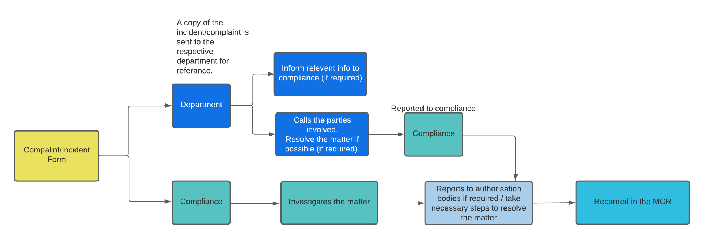

Supervision meeting takes place once a month and is mandatory for
all the staff. Prior to the supervision session the supervisor
check's for consistency is case notes and examine if any improvement
of services is required. The challenges faced by the staff members
are also addressed during the session with the aim to provide
assistance in any manner to the staff member in order to overcome
any challenges i.e. providing training. Team leaders provide notice
in advance to the supervisor about any non compliance which is
addressed during the supervision.
The supervisor works with the staff to resolve any non compliance by
placing strategies if required, which is reviewed during the next.
If the staff fails to perform as promised the matter is forwarded to
HR and an official warning letter is provided to the staff.
supervision. The supervision process is conducted through the DC
portal.
During an event of complaint / Incident the matter is forwarded to
the compliance and the respective department automatically. The
responsibility of the compliance officer is to investigate the
matter and during that process the compliance officer informs every
step of the investigation to all the parties involved in the matter.
If required the compliance officer informs the authorisation bodies.
Once the matter is resolved the it is recorded in the Master Of
Register.
A copy of Incident / Complaint is automatically sent to the
respective department for their reference. The department makes
contact with the parties involved if required. If there are any
relevant information related to the matter it is then forwarded to
the compliance officer.

During the recruitment process the appropriate candidates are
selected. Upon selection an welcome e-Mail is sent to the candidate.
The email contains all the documents required by Decent Care and the
link to the induction training. The candidates uploads all the
documents to the portal which is verified by Decent Care.
Upon verification the HR receives an email to book in an appointment
with the candidate to complete required documents such as contract,
position description and other relevant documents.
Another email is automatically sent to the Department, informing
them about the new staff. A meet and greet appointment is booked.